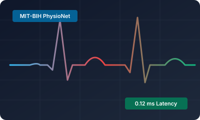

I am an Electrical Engineering researcher specializing in Autonomous Electronic Design Automation (EDA), Biomedical Digital Signal Processing (DSP), and Resource-Constrained Edge TinyML. My work focuses on bridging theoretical signal analysis with deterministic, zero-malloc ANSI C99 firmware execution on bare-metal silicon, as well as connecting large language models (LLMs) to closed-loop physical circuit simulation and KiCad manufacturing.
I am the first author of a published research preprint with an official DOI (10.13140/RG.2.2.16561.75366),
evaluating zero-phase IIR arrhythmia telemetry against the gold-standard MIT-BIH PhysioNet database with 100% sensitivity.
Additionally, I authored two flagship open-source Model Context Protocol (MCP) servers (circuit-design-anything and hardware-debug-anything)
enabling AI agents to deterministically synthesize analog circuits and debug ARM Cortex-M silicon registers.
Bridging LLMs (Claude Code, Cursor, Windsurf) with closed-loop SPICE simulation, KiCad PCB synthesis, and virtual silicon diagnostics
Autonomous Electronic Design Automation (EDA) MCP server enabling AI agents to design, simulate, snap to standard components, and export physical circuits to KiCad:
Autonomous embedded silicon diagnostics & virtual hardware MCP server connecting AI assistants to bare-metal microcontroller debugging:
CFSR, HFSR, BFAR, and MMFAR into human-readable root causes..resc) for testing firmware without physical hardware.Open-access research manuscript with verified DOI, benchmark evaluation on MIT-BIH PhysioNet, and zero-malloc C99 firmware

Mohammad Hossein Nosrati. Biomedical Signal Processing and Control (Elsevier, Impact Factor: 5.1 / Q1), Under Review. Official Preprint DOI: 10.13140/RG.2.2.16561.75366
Formulates a zero-phase forward-backward IIR filter cascade eliminating cardiac ST-segment morphological phase distortion, coupled with Pan-Tompkins QRS peak detection and a 16.3 KB static decision forest executed in strictly 0 Bytes of dynamic heap allocation.
Open-source signal processing architectures, firmware headers, and verifiable benchmarks
Industrial zero-malloc ANSI C99 telemetry engine for continuous SpO2/PPG processing with hardware CRC-16-CCITT and SQLite failover cache.
Extracts 0.3 mm chest apex vibrations from 5.8 GHz RF phase shifts & Wi-Fi CSI with carrier frequency offset (CFO) regression and dual-band IIR filters.
Reduces wireless radio transmission volume by 50%–70% via multiplication-free binary Bernoulli projection and OMP sparse recovery in DCT basis.
Clinical hearing enhancement pipeline featuring 64-tap adaptive NLMS feedback cancellation, spectral subtraction, and NAL-R WDRC dynamic compression.
International credentials from Harvard University and Cisco, academic standing, and direct contact
Neural networks, probabilistic reasoning, reinforcement learning, and search optimization.
Verify Harvard Credential →Object-oriented architecture, automated unit testing, regex, numerical computing.
Verify Harvard Credential →Intent-based networking, telemetry security policies, and cyber-physical automation.
Verify Cisco on Credly →Complete academic dossier detailing publications, coursework, TA teaching experience at the University of Qom, and technical proficiencies.
Open for prospective MSc / PhD graduate research assistantships in Edge AI, Biomedical Systems, and Autonomous EDA.